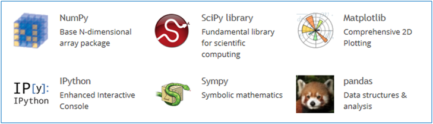

9. Os principais módulos “científicos”#
Embora não incluídas na distribuição oficial, disponibilizada em http://www.python.org, as seguintes bibliotecas foram criadas para adaptar (e aumentar) a linguagem Python com a funcionalidade necessária em muitas aplicações de natureza científica.
Estas bibliotecas são:
numpy: objetos de tipo
array, que suportam operações vetoriaisscipy: muitas funções de cálculo numérico
sympy: computação simbólica
ipython: deu origem ao projeto Jupyter, que contem a plataforma “Jupyter notebooks”
matplotlib: a principal biblioteca de gráficos científicos da linguagem Python
pandas: objetos adequados ao tratamento de dados em larga escala (
SerieseDataFrame)

9.1. numpy#
Esta é uma biblioteca fundamental na computação científica em Python e várias das outras bibliotecas dependem dela.
Apesar de introduzir muitas funcionalidades interessantes à linguagem, a principal característica da biblioteca é proporcionar operações vetoriais a partir da introdução na linguagem Python de um tipo novo de objetos: os array.
9.1.1. Operações “vectoriais”#
A funcionalidade do módulo numpy fica disponível após
import.
Por convenção, é usual criar um nome alternativo, mais abreviado: np:
# No princípio de um programa que use o numpy
import numpy as np
O que é uma operação vetorial?
O melhor é começar com um exemplo:
numbers = [0.0, 0.2, 0.5, 1.0, 1.1]
# transformar a lista num array
x = np.array(numbers)
print('x = ')
print(x)
# esta é uma operação vetorial
y = 4 * x
print('\ny = 4 * x =')
print(y)
x =
[0. 0.2 0.5 1. 1.1]
y = 4 * x =
[0. 0.8 2. 4. 4.4]
A função np.array() transformou a lista num objeto do tipo array.
Estes objetos suportam operações aritméticas “vetoriais”: na expressão
y = 4 * x a multiplicação por 4 é aplicada a todos os elementos de
x.
O resultado é também um array.
Por outro lado, as operações aritméticas entre dois arrays, por exemplo uma soma, são realizadas elemento a elemento, usando explicitamente o operador matemático da
operação, por exemplo, +:
a = np.array([0.0, 0.2, -0.5, 1.0, 1.1])
b = np.array([0.0, 0.1, -1.0, 1.0, 1.0])
print('a = ', a)
print('b = ', b)
y = a + b
print('\ny = a + b =')
print(y)
a = [ 0. 0.2 -0.5 1. 1.1]
b = [ 0. 0.1 -1. 1. 1. ]
y = a + b =
[ 0. 0.3 -1.5 2. 2.1]
Repare-se que a aplicação da mesma operação a todos os elementos de uma lista, um a um, é geralmente conseguida
através de operações num bloco de um comando for ou usando listas em compreensão.
Com arrays podemos não usar for ou listas em compreensão.
Consegue-se o mesmo efeito a partir de expressões que se assemelham muito à notação matemática aplicada a todos os elementos de um “vetor” simultaneamente.
Comparemos o uso de listas com o uso de arrays:
numbers = [0.0, 0.2, 0.5, 1.0, 1.1]
x = np.array(numbers)
# listas
ylist = [4 * n for n in numbers]
# array
y = 4 * x
print(ylist)
print(y)
[0.0, 0.8, 2.0, 4.0, 4.4]
[0. 0.8 2. 4. 4.4]
Este ganho na simplicidade da notação é muito poderoso, já que podemos frequentemente exprimir operações numéricas complexas e sucessivas de uma forma muito semelhante à notação algébrica, mas aplicando a conjuntos inteiros de valores numéricos “em paralelo”.
Mais tarde veremos um exemplo disso mesmo, em que fazemos a simulação das variações de carga de um aminoácido em solução com as variações de pH, aplicando expressões simples a toda a escala de pH, usando centenas de valores no intervalo [0, 14].
Mas os arrays foram criados para as operações numéricas:
os arrays são homogéneos: todos os seus elementos são números, ao contrário das listas, que são flexíveis e podem ser constituídas por elementos de diversos tipos, por exemplo, podemos misturar strings com números numa lista, ou criar listas em que os elementos são “pares” de valores.
9.1.2. Criação de arrays com as funções .array(), .arange() e .linspace()#
Já vimos a função array() que não é mais do que uma função básica que tenta transformar o seu argumento (geralmente uma lista) num array:
x = np.array([1, 1.2, 3, 3.5])
print(x)
[1. 1.2 3. 3.5]
Mas há outras maneira de criar arrays.
Se pretendermos criar um array em que os elementos possuem uma certa regularidade, existem várias outras funções à nossa disposição:
A função arange() cria arrays de uma forma semelhente à
função range().
O resultado é um array que varia entre um valor numérico inicial e um valor numérico final, mas dando um valor de espaçamento entre os números.
Mas, de uma forma mais flexível do que a função range(),
a função arange() não gera apenas números inteiros:
# array entre 1.5 e 2.0 com espaçamento de 0.1
x = np.arange(1.5, 2.0, 0.1)
print(x)
[1.5 1.6 1.7 1.8 1.9]
Como se pode ver, o valor final é exclusivé.
Muito semelhante à função arange() é a função
linspace(), que também gera um array de valores igualemnte espaçados, mas em que o terceiro argumento não é o espaçamento, é o número de valores pretendidos no array.
Os extremos do intervalo, o valor inicial e o valor final estão incluídos:
# 5 números no intervalo 1 a 2
# extremos incluídos
x = np.linspace(1, 2, 5)
print(x)
[1. 1.25 1.5 1.75 2. ]
Uma das várias aplicações da função linspace() é definir comodamente valores dentro de um intervalo a partir
dos quais possa calcular o resultado de uma transformação, como se estivesse a transformar x -> y:
x = np.linspace(1, 2, 6)
print('x')
print(x)
y = 4 * x**2 -3
print('\ny = 4 * x**2 -3')
print(y)
x
[1. 1.2 1.4 1.6 1.8 2. ]
y = 4 * x**2 -3
[ 1. 2.76 4.84 7.24 9.96 13. ]
As vantagens de linspace() sobre arange()é o facto de não ser necessário calcular o espaçamento entre
valores. Dando o número de pontos total, o espaçamento é calculado. Além disso os extremos estão incluídos.
É frequente ver a função linspace()ser usada para gerar valores das abcissas de um gráfico, aplicando uma expressão para gerar as ordenadas.
Vamos traçar a função \(f(x) = 4 x^3 -3\) no intervalo entre -2 e 2:
# só necessário em Jupyter notebooks
%matplotlib inline
# import do módulo pyplot da biblioteca matplotlib
from matplotlib import pyplot as plt
x = np.linspace(-2, 2, 100)
y = 4 * x**3 -3
plt.grid()
plt.plot(x, y)
plt.show()
Este gráfico é feito com 100 pontos igualmente espaçados nas abcissas e traçado entre -2 e 2.
Gerar pontos neste intervalo é da responsabilidade da função linspace().
Para gerar as ordenadas, basta aplicar a expressão 4 * x**3 -3 ao array x resultante da função linspace().
A função plot() é aquela que desenha o gráfico da função.
Para usa-la precisamos de indicar um array para as abcissar e um array para as ordenadas.
Os cálculos vetoriais permitem exprimir de uma forma muito compacta as soluções de problemas numéricos sem escrever blocos for ou listas em comprensão.
Vejamos alguns exemplos:
Problema
Somar os primeiros 1000 quadrados perfeitos
sq1000 = sum(np.arange(1000)**2)
print(sq1000)
332833500
Repare-se o que aconteceu: a função arange(1000) criou um array (não uma lista) com 1000 elementos.
Como é um array, podemos imediatamente elevar a 2 (fazendo **2) resultando daí um outro array já com os quadrados de 1000 números calculados.
A função sum(), disponível na linguagem Python para calcular a soma de elementos de coleções dá o resultado final.
Mas a funcionalidade do módulo numpy é extremamente vasta.
São introduzidas muitas funções associadas a conceitos matemáticos simples.
Uma pequena ilustração: a função intersect1d() que calcula
um array resultante da interseção de dois arrays entendidos como conjuntos.
Problema
Encontrar os números pares até 200 que sejam também múltiplos de 17
even_nums = np.arange(2, 200, 2)
mult17 = np.arange(17, 200, 17)
common = np.intersect1d(even_nums, mult17)
print(common)
[ 34 68 102 136 170]
9.1.3. Dimensões (shape)#
Os arrays podem não ser “lineares” como uma lista.
Podem assemelhar-se a uma matriz, com duas dimensões. Na realidade, é mesmo possível termos arrays com mais de dua dimensões.
Para isso, um array tem um atributo chamado shape que consiste na indicação do número de elementos em cada “dimensão”.
Por exemplo, um array que representa um quadro de números 4 x 3 terá duas dimensões e shape igual a (4,3)
No seguinte exemplo, um array “linear” é forçado a tomar a forma de uma matriz 4 x 3:
x = np.arange(1, 13)
print(x)
x.shape = (4,3)
# significa 4 linhas e 3 colunas
print('\nApós mudar "shape" para (4,3)\nx =\n{}'.format(x))
[ 1 2 3 4 5 6 7 8 9 10 11 12]
Após mudar "shape" para (4,3)
x =
[[ 1 2 3]
[ 4 5 6]
[ 7 8 9]
[10 11 12]]
Imagine-se as possibilidades! Operações com matrizes inteiras expressas de uma forma simples e semelhante à notação matemática.
Os arrays com mais de 1 dimensão podem ser criados de outra formas. Vamos ver algumas delas.
9.1.4. Criação de arrays com .array(), .ones(), .zeros(), .eye(), .diag()#
A função array() pode receber uma lista de listas como argumento. cada lista é usada para formar uma linha do array bidimensional:
# array a partir de lista de listas
x = np.array( [[1, 1.2, 3], [1.3,5.1,1.3]] )
print(x)
print('shape =', x.shape)
[[1. 1.2 3. ]
[1.3 5.1 1.3]]
shape = (2, 3)
A função ones() cria um array todo preenchido com 1, com
determinadas dimensões:
x = np.ones((4,3))
print(x)
[[1. 1. 1.]
[1. 1. 1.]
[1. 1. 1.]
[1. 1. 1.]]
O mesmo acontece para zeros:
x = np.zeros((3,2))
print(x)
[[0. 0.]
[0. 0.]
[0. 0.]]
Também podemos obter uma matriz identidade a partir
da função eye() em que se indica a dimensão da matriz:
x = np.eye(3)
print(x)
[[1. 0. 0.]
[0. 1. 0.]
[0. 0. 1.]]
E também podemos gerar uma matriz diagonal, através da
função diag():
x = np.diag([1.2, 3.2, 4.1, 6.3])
print(x)
[[1.2 0. 0. 0. ]
[0. 3.2 0. 0. ]
[0. 0. 4.1 0. ]
[0. 0. 0. 6.3]]
9.1.5. Indexação a várias dimensões#
Os arrays têm muitas características em comuns com as listas.
Em particular, um array linear pode ser indexado com []
indicando uma posição ou fazendo um slice indicando duas posições, com números inteiros. O que obtemos é, por analogia com as listas, um elemento ou um “subarray”.
Mas um array com mais do que uma dimensão também pode ser indexado. Usamos [], como sempre, mas podemos indexar várias dimensões separadamente, separadas por ,
Se as dimensões forem duas, a primeira dimensão são as linhas e a segunda são as colunas:
Comecemos por criar um array 5 x 4:
x = np.linspace(1,20,20).reshape((5,4))
print(x)
[[ 1. 2. 3. 4.]
[ 5. 6. 7. 8.]
[ 9. 10. 11. 12.]
[13. 14. 15. 16.]
[17. 18. 19. 20.]]
Podemos obter o elelemento da linha 3 e coluna 1 da seguinte forma:
a = x[3,1]
print(x)
print('\nx[3,1] =', a)
[[ 1. 2. 3. 4.]
[ 5. 6. 7. 8.]
[ 9. 10. 11. 12.]
[13. 14. 15. 16.]
[17. 18. 19. 20.]]
x[3,1] = 14.0
Note-se que a numeração começa em 0, seja qual for a dimensão que está a ser indexada.
Se numa dimensão indicarmos : isto significa uma slice do “princípio ao fim”.
Isto significa que podemos obter, por exemplo, uma linha inteira:
# toda a linha 3
a = x[3, :]
print(x)
print('\nx[3, :] =', a)
[[ 1. 2. 3. 4.]
[ 5. 6. 7. 8.]
[ 9. 10. 11. 12.]
[13. 14. 15. 16.]
[17. 18. 19. 20.]]
x[3, :] = [13. 14. 15. 16.]
Mas um slice mais restritivo pode servir para obter uma “submatriz”.
No seguinte exemplo, obtemos o que está nas linhas de 1 a 3 e nas colunas de 1 a 3:
a = x[1:4, 1:4]
print(x)
print('\nx[1:4, 1:4] =')
print(a)
[[ 1. 2. 3. 4.]
[ 5. 6. 7. 8.]
[ 9. 10. 11. 12.]
[13. 14. 15. 16.]
[17. 18. 19. 20.]]
x[1:4, 1:4] =
[[ 6. 7. 8.]
[10. 11. 12.]
[14. 15. 16.]]
Mas os slices de arrays lineares são familiares, como
se tivessemos a trabalhar com uma lista:
x =np.arange(0, 1.1, 0.1)[2:]
print(x)
[0.2 0.3 0.4 0.5 0.6 0.7 0.8 0.9 1. ]
Mas o resultado de um slice continua a ser um array.
Podemos tirar partido disso com um exemplo que, parecendo complicado, pode ser resolvido de uma forma muito simples: as diferenças sucessivas de elementos de um array:
Problema
Mostrar que as diferenças entre os quadrados perfeitos sucessivos são os numeros ímpares
Gerar um array a com números ímpares será fácil, com arange().
Mas como fazer as diferenças sucessivas \(a_1 - a_0\) , \(a_2 - a_1\), etc?
E sem usar for?
Basta que façamos a diferença entre um o array \([a_1, a_2, a_3, ..., a_n]\) e o array \([a_0, a_1, a_2, ..., a_{n-1}]\).
Como são arrays a diferença vai ser realizada elemento a elemento e obtemos diretamente as diferenças sucessivas.
slices adequadas criam os dois arrays:
quads = np.arange(20)**2
# diferença entre quads[1:], que não tem o
# primeiro elemento
# e quads[0:-1], que não tem o último
# elemento
difs = quads[1:] - quads[0:-1]
print(quads)
print(difs)
[ 0 1 4 9 16 25 36 49 64 81 100 121 144 169 196 225 256 289
324 361]
[ 1 3 5 7 9 11 13 15 17 19 21 23 25 27 29 31 33 35 37]
9.1.6. Indexação booleana#
A flexibilidade da indexação de arrays não fica por aqui.
Se fizermos uma operação lógica com arrays criamos um
array booleano que contem Truee False assinalando as posições em que a condição é verdadeira ou falsa:
x = np.linspace(1, 10, 6)
print('x =', x)
a = x < 7
print('\nx < 7')
print(a)
x = [ 1. 2.8 4.6 6.4 8.2 10. ]
x < 7
[ True True True True False False]
Aqui o array booleano indica as posições em que os elementos são menores do que 7.
Um array booleano pode indexar um outro array.
Ao faze-lo, retemos os elementos para os quais a posição é verdadeira e descartamos os outros:
x = np.linspace(1, 10, 6)
print('x =', x)
a = x < 7
print('\nx < 7')
print(a)
y = x[x < 7]
print('\nx[x < 7]')
print(y)
x = [ 1. 2.8 4.6 6.4 8.2 10. ]
x < 7
[ True True True True False False]
x[x < 7]
[1. 2.8 4.6 6.4]
Problema
Encontra os números até 2000 que satisfaçam simultaneamente:
são números ímpares
o logaritmo base 2 esteja entre 3 e 5
nums = np.arange(1, 2001)
restricted = nums[(np.log2(nums) < 5) & (np.log2(nums) > 3) & (nums%2==1)]
print(restricted)
[ 9 11 13 15 17 19 21 23 25 27 29 31]
Este exemplo demonstra a conjunção de várias condições para arrays.
Em vez de and e or, as operações lógicas booleanas elemento a elemento são realizadas pelos operadores & para a conjunção e | para a disjunção. Fizemos a conjunção de 3 condições e indexámos o array nums com o array booleano daí resultante.
9.1.7. Indexação com listas de inteiros ou outros arrays#
Finalmente, uma lista de números inteiros ou um array de inteiros podem ser usados para indexar arrays.
O efeito é selecionar apenas os elementos que estão em determinadas posições:
x = np.linspace(5, 15, 6)
print('x =', x)
i = [1,4,5]
print('\ni =', i)
y = x[i]
print('\nx[i] =', y)
x = [ 5. 7. 9. 11. 13. 15.]
i = [1, 4, 5]
x[i] = [ 7. 13. 15.]
Problema
Obter raízes quadradas dos números até 200, mas apenas de 3 em 3, começando da raíz de 0
roots = np.arange(201)**0.5
locs = range(0, len(roots), 3)
roots = roots[locs]
print(roots)
[ 0. 1.73205081 2.44948974 3. 3.46410162 3.87298335
4.24264069 4.58257569 4.89897949 5.19615242 5.47722558 5.74456265
6. 6.244998 6.4807407 6.70820393 6.92820323 7.14142843
7.34846923 7.54983444 7.74596669 7.93725393 8.1240384 8.30662386
8.48528137 8.66025404 8.83176087 9. 9.16515139 9.32737905
9.48683298 9.64365076 9.79795897 9.94987437 10.09950494 10.24695077
10.39230485 10.53565375 10.67707825 10.81665383 10.95445115 11.09053651
11.22497216 11.35781669 11.48912529 11.61895004 11.74734012 11.87434209
12. 12.12435565 12.24744871 12.36931688 12.489996 12.60952021
12.72792206 12.84523258 12.9614814 13.07669683 13.19090596 13.3041347
13.41640786 13.52774926 13.6381817 13.74772708 13.85640646 13.96424004
14.07124728]
9.1.8. Funções associadas a arrays#
Os objetos do tipo array possuem muitas funções associadas.
Estas funções são acedidas seguindo a notação
array.função()
tal como vimos para muitas funções associadas a listas, dicionários e strings.
Algumas são:
.sum()que calcula a soma dos elementos.mean()que calcula a média dos elementos.var()que calcula a variância dos elementos.std()que calcula o desvio padrão dos elementos.prod()que calcula o produto dos elementos.ptp()(peak to peak) que calcula o máximo - mínimo.cumsum()que calcula a soma cumulativa dos elementos.cumprod()que calcula o produto cumulativo dos elementos
Repare-se na utilidade das funções .cumsum() e .cumprod(), que podem ser usadas para calcular fatoriais e somas parciais de séries matemáticas:
Problema
Mostrar (com arrays) que a soma dos inversos dos fatoriais converge (rapidamente) para
\(e\) = 2.7182818284…
nums = np.arange(1, 15)
facts = nums.cumprod()
invfacts = 1.0 / facts
series_invfacts = invfacts.cumsum()
print('Fatoriais:')
print(facts)
print('\nSérie dos inversos dos fatoriais:')
print(series_invfacts)
Fatoriais:
[ 1 2 6 24 120 720
5040 40320 362880 3628800 39916800 479001600
1932053504 1278945280]
Série dos inversos dos fatoriais:
[1. 1.5 1.66666667 1.70833333 1.71666667 1.71805556
1.71825397 1.71827877 1.71828153 1.7182818 1.71828183 1.71828183
1.71828183 1.71828183]
No caso da aplicação destas funções a arrays multidimensionais, podemos especificar um “eixo” para aplicar o cálculo.
Vejamos a aplicação da função .sum() a um array unidimensional:
a = np.linspace(1,20,20).sum()
print(a)
210.0
E agora 3 maneiras de aplicar a função .sum() a um array com duas dimensões, 5 x 4
# Como se fosse unidimensional
# aplicando a todos os elementos
x = np.linspace(1,20,20).reshape((5,4))
print(x)
s = x.sum()
print('\n', s)
[[ 1. 2. 3. 4.]
[ 5. 6. 7. 8.]
[ 9. 10. 11. 12.]
[13. 14. 15. 16.]
[17. 18. 19. 20.]]
210.0
# Ao longo do eixo 0, isto é, ao longo das colunas
x = np.linspace(1,20,20).reshape((5,4))
print(x)
s = x.sum(axis=0)
print('\n', s)
[[ 1. 2. 3. 4.]
[ 5. 6. 7. 8.]
[ 9. 10. 11. 12.]
[13. 14. 15. 16.]
[17. 18. 19. 20.]]
[45. 50. 55. 60.]
# Ao longo do eixo 1, isto é, ao longo das linhas
x = np.linspace(1,20,20).reshape((5,4))
print(x)
s = x.sum(axis=1)
print('\n', s)
[[ 1. 2. 3. 4.]
[ 5. 6. 7. 8.]
[ 9. 10. 11. 12.]
[13. 14. 15. 16.]
[17. 18. 19. 20.]]
[10. 26. 42. 58. 74.]
E agora mais um problema com séries, mas obtendo um gráfico:
Problema
Mostrar que a série alternada dos inversos dos números
\(\sum_{n=1}^{\infty} \frac{(-1)^{n+1}}{n}\)
converge para log 2 (embora lentamente)
# começando com apenas 80 termos na série parcial
i = np.arange(1,80)
termos = (-1)**(i+1) * 1/i
s = termos.cumsum()
# mostrar os últimos 4
print(s[:4])
[1. 0.5 0.83333333 0.58333333]
Parece que com 80 números ainda estamos longe da convergência…
É melhor ver num gráfico:
from matplotlib import pyplot as plt
i = np.arange(1,80)
termos = (-1)**(i+1) * 1/i
s = termos.cumsum()
plt.ylim(0.6, 0.8)
# draw an horizontal line on log2
plt.axhline(np.log(2), color='red')
# plot the series
plt.plot(i,s, '-o')
plt.show()
from matplotlib import pyplot as plt
# Agora com 300 termos...
i = np.arange(1, 300)
termos = (-1)**(i+1) * 1/i
s = termos.cumsum()
plt.ylim(0.6, 0.8)
# draw an horizontal line on log2
plt.axhline(np.log(2), color='red')
# plot the series
plt.plot(i,s , alpha=0.7)
plt.show()
9.1.9. Geração de números aleatórios. (sub-módulo numpy.random)#
O numpy é um módulo com alguma complexidade e contem sub-módulos dedicados
a certas funcionalidades mais específicas.
Dois exemplos são a geração de números aleatórios que seguem uma detrminada distribuição estatística e as operações com matrizes de acordo com a álgebra linear.
Como exemplo, vamos obter valores aleatórios das seguintes distribuições:
Poisson (usada como modelo do número de ocorrências durante um intervalo)
\(p(x, \lambda) = \frac{e^{-x} \lambda^x}{x!}\) com \(x = 0, 1, 2, ...\)
Normal (0,1)
\(f(x) = \frac{1}{\sqrt{2\pi}} e^{-x^2 / 2}\) com \(x \in [-\infty, \infty]\)
print('20 valores aleatórios da dist. de Poisson')
print(' com lambda = 3')
x = np.random.poisson(3, 20)
print(x)
20 valores aleatórios da dist. de Poisson
com lambda = 3
[0 6 3 2 3 5 4 3 1 7 1 2 4 4 2 0 2 1 4 5]
print('5 valores aleatórios da distribuição N(0,1)')
x = np.random.randn(5)
print(x)
5 valores aleatórios da distribuição N(0,1)
[ 1.14407212 -0.00654819 -0.9849889 1.48238942 0.83407833]
Problema
“Provar” numericamente que a média e a variância da distribuição de Poisson são ambas iguais a \(\lambda\).
# 100000 valores aleatórios da distribuição de
# Poisson com lambda = 3
sample = np.random.poisson(3, 100000)
print('Média = ', sample.mean())
print('Variância =', sample.var())
Média = 3.00633
Variância = 3.0025499311000003
Pode-se ver que ambos os valores são quase iguais a 3, o valor de \(\lambda\).
Problema» Mostar “numericamente” o Teorema do Limite Central
para uma distribuição de Poisson.
# Distribuição de médias de amostras de 2
# 2 x 100 000 números aleatórios com distribuição de Poisson
# com lambda = 3
# isto simula 100000 amostras com 2 elementos cada uma
sample = np.random.poisson(3, (100000,2) )
# calcular as médias das 100000 amostras de 2
means = sample.mean(axis=1)
# a função unique faz contagens dos diferentes resultados
unique, counts = np.unique(means, return_counts=True)
from matplotlib import pyplot as plt
plt.vlines(unique, [0], counts, color='darkblue')
plt.plot(unique, counts, 'o')
plt.show()
# Distribuição de médias de amostras de 20
# 20 x 100 000 números aleatórios com distribuição de Poisson
# com lambda = 3
# isto simula 100000 amostras com 2 elementos cada uma
sample = np.random.poisson(3, (100000,20) )
# calcular as médias das 100000 amostras de 20
means = sample.mean(axis=1)
# a função unique faz contagens dos diferentes resultados
unique, counts = np.unique(means, return_counts=True)
from matplotlib import pyplot as plt
plt.vlines(unique, [0], counts, color='darkblue')
plt.plot(unique, counts, 'o')
plt.show()
Parece evidente a aproximação da distribuição por uma normal
9.1.10. Matrizes e álgebra linear#
O produto de arrays segue a regra das operações vetoriais e é feita elemento a elemento.
Mas, na álgebra linear, o produto de matrizes é feito de outra maneira.
O numpy admite uma versão modificada dos arrays, chamada matrix que
repeita a fórmula do produto de matrizes e também tem outras operações frequentes na
álgebra linear.
veja-se a multiplicação de matrizes e a sua transposição:
A = np.matrix([[1, 2, 3], [2, 1, 6], [1, 7, 4]])
print('A\n', A)
B = np.matrix([1,2,3]).T
print('B\n', B)
C = A * B
print('\nC = A * B\n', C)
A
[[1 2 3]
[2 1 6]
[1 7 4]]
B
[[1]
[2]
[3]]
C = A * B
[[14]
[22]
[27]]
Podemos também resolver sistemas de equações lineares expressos na forma A . X = B
A = np.matrix([[1.0, 2, 3], [2, 1, 6], [1, 7, 4]])
B = np.matrix([1,2,3]).T
X = np.linalg.solve(A, B)
print('Solução de A*X = B')
print(X)
Solução de A*X = B
[[-5.]
[ 0.]
[ 2.]]
Esta introdução ao módulo numpy foi muito superficial e uma seleção apenas dos aspetos mais importantes. Poderíamos continuar a explorar o módulo, mas a com a prática somos muitas vezes levados a procurar funções e sub-módulos que resolvem muitos problemas de natureza numérica de uma forma muito expressiva e simples.